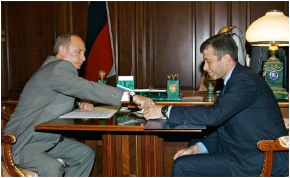
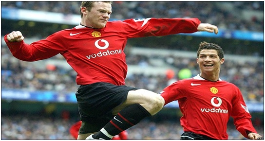

Chương 35

hoảng năm 2003, doanh nhân người Ireland Dermot Desmond và gia đình tài phiệt Mỹ Malcolm Glazer mỗi bên nắm 1.5% cổ phần tại United plc. John de Mol người Hà Lan và Harry Dobson người Scotland lần lượt giữ 4.1 và 6.5%. Cổ đông lớn thứ nhì là hãng truyền thông BSkyB, với 9.9%, còn lớn nhất là cặp đôi Magnier-McManus,10.4%. Không như các fan hâm mộ kỳ vọng, Magnier và McManus chẳng những không cất nhắc Ferguson, mà còn tính chuyện sa thải ông.
Nguyên do cũng chỉ vì con ngựa đua Rock of Gibraltar. Sau khi về hưu, The Rock lui về làm công tác…truyền giống. Ước tính mỗi năm, nó có thể giao phối với gần 300 con cái, đem về cho chủ đến sáu triệu bảng tiền phí. Là đồng chủ nhân, Sir Alex lẽ ra được hưởng 50% lợi nhuận, tức là ba triệu. Nhưng Magnier lại đề nghị trả cho Sir một lần bảy triệu bảng rồi thôi. Sir đương nhiên không đồng ý. Trung bình một ngựa đực có thể truyền giống trong 20 năm, ba triệu nhân 20 là 60 triệu, vậy mà Magnier chỉ trả bảy, ai có thể chấp nhận được? Thế là hai bên lôi nhau ra tòa.
Dù khôn ngoan đến đâu, Ferguson cũng chỉ là một HLV, về mặt mánh khóe thủ đoạn không sao đọ nổi với tài phiệt. Khi ông mua 50% cổ phần The Rock từ Magnier, đã có những lắt léo về giấy tờ, Magnier nhân đó biện luận trước tòa rằng Fergie chẳng phải đồng chủ nhân gì sất, mà con ngựa hoàn toàn thuộc về vợ chồng ông ta. Vụ việc giằng co chưa ngã ngũ, Magnier và McManus mua đứt phần hùn của BskyB tại United plc, nâng sở hữu mình lên 20.3%. Áp lực lên Fergie ngày càng lớn.
Cuộc chiến giữa ông chủ và người làm công rõ ràng không cân sức. Người hâm mộ United đều lo lắng, sợ Magnier và McManus mua đa số cổ phần, rồi sa thải Ferguson, nên bảo nhau sắm thật nhiều cổ phiếu. CĐV không mấy ai giàu có, sắm chẳng được bao nhiêu, nên David Gill, người lên thay Peter Kenyon làm GĐĐH, khuyến khích các cổ đông lớn tậu thêm cổ phần, để làm đối trọng với cặp đôi người Ireland. Nhà Glazer hăng hái nhất, liên tiếp tăng phần hùn lên 14%, rồi 19%. Nhưng Magnier-McManus không chịu thua, họ nâng sở hữu tới 28%.
Cuộc tranh chấp dai dẳng, khiến mọi người ở United đều bị phân tâm, thành tích CLB cũng một phần vì đó mà đi xuống. Ai sẽ là chủ nhân mới? Ai sẽ bị bay chức? Những tin đồn bay tứ tung, không ma nào biết thật giả ra sao, và tương lai đội bóng sẽ về đâu. Cuối cùng, vào tháng 3, 2004, cảm thấy trứng không chọi nổi với đá, không muốn kéo dài thêm mọi chuyện để ảnh hưởng đến đội bóng, Ferguson rút đơn, chấp nhận thỏa thuận ngoài tòa cùng Magnier. Đã chiếm thế thượng phong, Magnier nuốt luôn lời hứa bảy triệu trước đây, chỉ trả Fergie hai triệu rưỡi.
Giữalúc Ferguson bị tài phiệt Ireland “bóc lột”, Chelsea được một “bố già đường mật” đỡ đầu, vươn lên thành một thế lực đáng sợ tại giải Ngoại Hạng Anh. Mọi chuyện bắt đầu từ trận Manchester United thắng Real Madrid 4-3 ở Champions League như đã kể nơi chương trước. Trên khán đài xem trận đấu ấy có tỷ phú trẻ người Nga Roman Abramovich. Mãn nhãn trước trận cầu siêu hạng, Abramovich đâm ra mê mẩn, quyết định đầu tư vào bóng đá. Ông ta mua lại Chelsea, rồi đổ vào đội bóng thủ đô hàng núi tiền. Chỉ nội mùa hè 2003, Chelsea chi tiêu vung vít, bỏ ra 121 triệu bảng mang về 12 cầu thủ mới. GĐĐH của United, Peter Kenyon, cũng nghe theo tiếng gọi kim ngân, chạy sang Stamford Bridge. Tiêu tiền như nước, mỗi mùa tổng kết thu chi, Chelsea đều lỗ nặng, song có hề chi, vì lỗ bao nhiêu, ông chủ lại bù bấy nhiêu. Tài sản Abramovich khi đó ước tính khoảng bảy tỷ bảng, vài trăm triệu đối với ông ta chẳng thấm vào đâu.

Roman Abramovich (phải) và tổng thống Nga Vladimir Putin (Ảnh: Dailymail.co.uk)
Tuy không thể cạnh tranh với Chelsea, trong hai mùa 2003-2004 và 2004-2005, United cũng mua nhiều cầu thủ, đáng chú ý nhất là thủ môn Tim Howard, hậu vệ Gabriel Heinze, cặp tiền đạo Louis Saha – Alan Smith, và hai tài năng trẻ: Cristiano Ronaldo và Waye Rooney.Năm 2002, khi Ronaldo mới 17 tuổi, đang thi đấu cho Sporting Lisbon, Carlos Queiroz đã tiến cử anh cho Alex Ferguson. Fergie chưa mấy mặn mà, nhưng đến tháng 8, 2003, sau trận giao hữu với Sporting tại BĐN, chính mắt thấy Ronaldo diễn trò như xiếc, quần John O’Shea tơi bời hoa lá, ông biết mình đã đào trúng mỏ vàng, quyết định ký hợp đồng với anh ngay tắp lự. Lúc này, Queiroz, đang là HLV trưởng Real Madrid, cũng hỏi mua Ronaldo; United phải trả cho Sporting 12.5 triệu bảng mới thắng được “Kền Kền”.
Rất nhiều người nghi ngờ: Mua anh chàng măng sữa, vô danh tiểu tốt này với giá quá cao,liệu có xứng đáng không? Thiên hạ càng xôn xao khi Ronaldo được thừa kế chiếc áo số 7 của David Beckham. Ngay trận đầu tiên, tiền vệ người Bồ đã đập tan những hoài nghi. Với đôi chân dẻo quẹo và kỹ thuật cá nhân siêu đẳng, anh nhanh chóng chinh phục người hâm mộ, góp công lớn đưa United giành Cúp FA năm 2004. Ronaldo ghi một bàn trong trận thắng Manchester City 4-2 ở vòng năm, sau đó mở tỷ số trận chung kết gặp Milwall. Van Nistelrooy ghi thêm hai trái, đem về chiến thắng 3-0, và Cúp FA thứ 11 trong lịch sử.
Wayne Rooney thì không ai nghi ngờ. Trưởng thành từ lò Everton, 16 tuổi, anh ra mắt ở giải Ngoại Hạng, ghi bàn tuyệt đẹp vào lưới Arsenal, vang danh thần đồng. Trước đó từ lâu, anh đã lọt vào tầm ngắm các tuyển trạch viên United. “Đó là trận U-18 United gặp U-18 Everton”, Eric Harrison kể, “Rooney mới 14 đã vào sân. Coi nó đá được năm phút, tôi quay qua Jim Ryan: Ê, mình đang xem cái gì thế này? Sau trận đấu, chúng tôi đến gặp Colin Harvey, người phụ trách đội trẻ Everton, chỉ Rooney hỏi: Đứa nào đấy? Hắn đáp: Ồ, có ai đâu. Rõ ràng hắn muốn giấu tài năng, nên không nói ra. Ngày hôm sau, Jim báo ngay lên sếp. Từ đó trở đi, sếp luôn coi Rooney là ưu tiên cần mua”.
Ngày mua Rooney, Ferguson và David Gill đến Goodison Park, chứng kiến cảnh chủ tịch Everton, Bill Kenwright, khóc tấm tức. “Hượm nào”, Kenwright nói trong nước mắt, “Để tôi gọi cho mẹ đã”. Thế rồi ông ta nức nở trong điện thoại: “Mẹ ơi, chúng nó chôm mất thần đồng của mình rồi, chôm mất rồi”. “Giá trị thật của thằng lỏi phải 50 triệu là ít đấy”, tiếng bà mẹ trả lời.
Không đến 50 triệu, song giá trị hợp đồng cũng lên đến 25, cộng điều khoản phụ thì là 31, cực cao đối với một cầu thủ 18 tuổi. Thế mà Rooney không bị áp lực gì. Ngay trận ra mắt gặp Fenerbahce tại Cúp C1, ngày 28 tháng 9, 2004, anh lập hattrick, và kiến tạo một bàn cho đồng đội, giúp Quỷ Đỏ hủy diệt đối phương 6-2[1]. Mùa 2004-2005, Rooney là vua phá lưới của United với 17 bàn trên các mặt trận, đoạt danh hiệu Cầu Thủ Trẻ Xuất Sắc Nước Anh của PFA. Nếu như Solskjaer là “sát thủ mặt trẻ thơ”, Rooney chẳng khác một…trẻ thơ mặt sát thủ!
Ngoài cú hattrick vào lưới Fenerbahce, Rooney để lại ấn tượng mạnh nhất trong cuộc đại chiến ở Old Trafford vào ngày 24 tháng 10, 2004. Anh kiếm được quả phạt đền cho Nistelrooy, rồi đích thân lập công ấn định tỷ số 2-0, cắt đứt chuỗi 49 trận bất bại của Arsenal. Cay cú sau trận thua, Arsene Wenger mắng Nistelrooy là thằng lừa đảo. Nghe Nistelrooy mách lại, Ferguson hộc tốc từ phòng thay đồ chạy ra, thách thức đồng nghiệp người Pháp: “Ê, ông đi về lo việc nhà mình đi, để cầu thủ tôi yên nghe chưa!” Wenger giận tím mặt, nắm chặt tay. Giữa lúc hai HLV đang kênh nhau thì “bẹt” một cái, một chiếc bánh pizza bay vèo vào Ferguson, dính đầy quần áo, mặt mũi!
Cho đến ngày nay, người ta vẫn gọi vụ gây gổ sau trận đấu hôm đó là…Pizzagate[2]. Cầu thủ ném bánh pizza là ai, không có chứng cứ cụ thể, nhiều người cho là Cesc Fabregas. Ferguson và Wenger thì “chiến tranh lạnh” với nhau, đến tận 2009 mới làm hòa.
Dẫu xuất sắc, đầy triển vọng, cả Rooney lẫn Ronaldo đều còn trẻ, chưa đạt đến đỉnh cao phong độ, không tỏa sáng được suốt mùa giải; United chưa thể dựa vào họ để chinh phục danh hiệu.Trong hai năm 2004, 2005, đội chủ sân Old Trafford như bị “sao quả tạ” chiếu tướng. Vắng Beckham, tức mất đi tay kiến thiết lợi hại cho Van Nistelrooy, khiến số bàn thắng của tiền đạo Hà Lan giảm hẳn đi. Tệ hơn nữa, Nistelrooy lại chấn thương nặng, phải nghỉ gần cả năm. Solskjaer thì đã chấn thương đầu gối từ tháng 9, 2004, không bao giờ lành lặn hoàn toàn được nữa. Ferguson mua về Louis Saha để chữa cháy, nhưng tiền đạo người Pháp cũng vào viện liên miên, chẳng mấy khi khỏe. Hàng công đã vậy, hàng thủ chẳng khá khẩm gì hơn. Trung vệ trụ cột Rio Ferdinand có tên trong danh sách thử doping ngẫu nhiên, song vốn tính lơ đãng, hay quên, đến ngày xét nghiệm lại tung tăng bỏ đi shopping! Hậu quả là bị treo giò tám tháng. Vị trí thủ môn vẫn là điểm yếu như nhiều năm nay: Tuy không “diễn hề” như Barthez, trình độ của Tim Howard và Roy Carroll chỉ giới hạn.
Mùa 2003-2004, United thua đến chín trận, đứng thứ ba sau Arsenal và Chelsea. Van Nistelrooy ghi 30 bàn, tuy vẫn cao, nhưng là thấp nhất từ khi anh đến Old Trafford. Ngoài Nistelrooy, chỉ có Paul Scholes 14 lần lập công, không ai nữa ghi được tới 10 bàn.Mùa 2004-2005 thuộc loại tệ nhất trong kỷ nguyên Ferguson: Vua phá lưới Rooney ghi được đúng 17 bàn, Nistelrooy tuy nghỉ gần cả mùa vẫn đứng thứ hai với 16. Chẳng lạ gì khi đó là năm trắng tay cho United.Tuy thắng Arsenal cả hai lượt đi về (2-0 và 4-2), đội thúc thủ hai lần trước Chelsea, vẫn dậm chân tại chỗ tại hạng ba, nhìn đội bóng nhà giàu của Roman Abramovich lần đầu tiên đăng quang kể từ 1955. Tại Cúp C1, nếu như mùa 03-04, Quỷ Đỏ có thể đổ lỗi cho trọng tài vì đã từ chối bàn thắng hoàn toàn hợp lệ của Paul Scholes, khiến họ bị Porto loại tức tưởi ở tứ kết, thì mùa sau đó, không gì có thể bào chữa cho thất bại toàn diện trước AC Milan.
Hồi 1998, một số chuyên gia từng cho rằng tương lai bóng đá Anh thuộc về Arsenal. Nay, họ lại dự đoán Chelsea sẽ thống trị. Không chỉ mua về những cầu thủ đắt giá, Roman Abramovich còn chiêu mộ được nhà cầm quân trẻ đến từ BĐN Jose Mourinho, một người rất ngạo nghễ, kiêu căng, song tài năng cũng tràn đầy. Cạnh tranh trực tiếp cùng United nay không còn là Arsenal, mà là Chelsea; đối thủ chính của Ferguson trong các trận chiến cân não không còn là Wenger, mà là Mourinho.
Mourinho rất khác Wenger. Wenger khép kín, ít giao du, sau trận đấu chẳng bao giờ ghé qua chạm cốc cùng Ferguson; Mourinho trái lại, thường xuyên mời rượu Sir Alex, luôn miệng gọi Sir sếp này sếp nọ. Thật ra, Mourinho đã tự cho mình là “người đặc biệt” thì có coi thiên hạ vào đâu; có điều, ông thực sự khâm phục bản lĩnh vị HLV lão luyện thành Man, đối với Sir đặc biệt cung kính. Sir cũng có lòng liên tài, đánh giá rất cao kẻ đàn em tuổi trẻ tài cao, nên dù Chelsea và United trở nên kình địch, hai ông thầy cư xử cùng nhau rất hữu hảo. Sir Alex không mấy khi xỏ xiên, móc họng Mourinho như từng làm với Wenger, vì Sir biết Mou máu lạnh hơn ông giáo người Pháp, tâm lý chiến chẳng có tác dụng.
Chelsea của Mourinho cũng trái ngược hoàn toàn với Arsenal của Wenger. Wenger thích lối đá đẹp, mang thiên hướng tấn công; Mourinho chỉ chú trọng thực dụng. Triết lý của Mourinho có thể tóm gọn trong hai câu: “Thắng trước hết là không thua”, và “Chiến thắng bằng mọi giá”. Trước giờ ở Anh, đối với các fan trung lập, đội bóng khó ưa nhất chính là…Manchester United. Từ khi Abramovich và Mourinho xuất hiện, cái danh hiệu khó ưa ấy được chuyển qua cho Chelsea. Người ta ghét lối tiêu tiền kiểu “trọc phú” của CLB thủ đô, và không thưởng thức nổi lối chơi phòng ngự buồn ngủ, đầy toan tính, chủ yếu dựa vào cơ bắp của họ. Taylor (2007) thuật lại nhiều mẩu chuyện vềtình cảm đột xuất giành cho United. Ferguson bỗng dưng đi đến đâu cũng được ủng hộ. Nhiều người chặn ông ngoài đường, bắt tay thân mật “Tôi không phải CĐV đội ngài, nhưng cố lên nhé”. Ông đi taxi, tài xế cũng quay lại: “Em chẳng mê Man U đâu, nhưng bác không được để bọn Chelsea vô địch thêm nữa”. Từ khắp nơi, thư của CĐV trung lập đổ về Old Trafford. Ngay cả fan của…Liverpool cũng viết thư, động viên Quỷ Đỏ cố gắng ngăn bước Chelsea.
Động viên như vậy, chứ chắc ai cũng nhìn về Manchester với ánh mắt bi quan. Kết mùa 04-05, tương lai đội đỏ có vẻ tối đen như…tiền đồ chị Dậu. Tiền không mua được tất cả, nhưng đủ sức mua chức VĐQG cho Chelsea; Arsenal vừa bị soán ngôi, song đang trông chờ vào tương lai tươi sáng khi chuyển tới SVĐ mới Emirates; còn Liverpool vừa giành Cúp C1 lần thứ năm, sau chiến thắng không tưởng trước AC Milan. Trong nhóm tứ đại gia, chỉ United là lép vế toàn diện.
Duy Ferguson vẫn tự tin, bởi ông hướng tới tương lai, chứ không bó buộc tầm nhìn vào hiện tại. Thất bát vài mùa là điều khó tránh, vì Thế Hệ Vàng đang dần tan rã, cần một giai đoạn chuyển tiếp để xây dựng nhân sự thay thế. Không có Abramovich chống lưng, United chẳng thể bỏ một lúc hàng trăm triệu đưa về một chục ngôi sao. Họ chỉ có thể đi từ từ: Mùa này mua Ronaldo, mùa tới mua Rooney, mùa tới nữa tiếp tục hoàn chỉnh lực lượng. Nhìn vào Ronaldo và Rooney, Sir Alex thấy một thế hệ vàng thứ hai. Ông tin chắc: Chỉ cần kiên nhẫn, đợi bộ đôi ấy trưởng thành, thiên hạ sẽ lại về tay…quỷ.

Rooney và Ronaldo (Ảnh: Bbc.co.uk)
Chú thích:
[1] Trong lịch sử United, chỉ có hai cầu thủ lập được hattrick trong trận ra mắt. Người thứ nhất là Charlie Sagar, (ghi ba bàn trong trận United thắng Bristol 5-1 năm 1905).
[2] Nhái theo Watergate, vụ scandal nổi tiếng vào đầu thập niên 1970, khiến tổng thống Mỹ Richard Nixon phải từ chức.